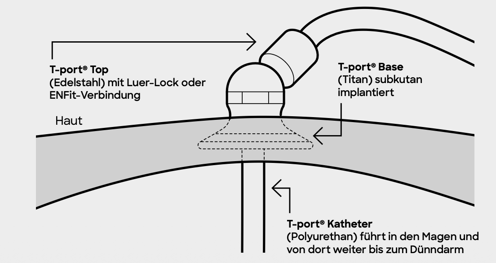
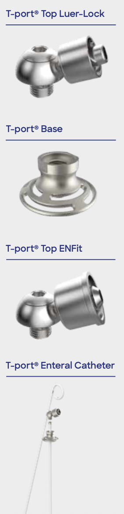
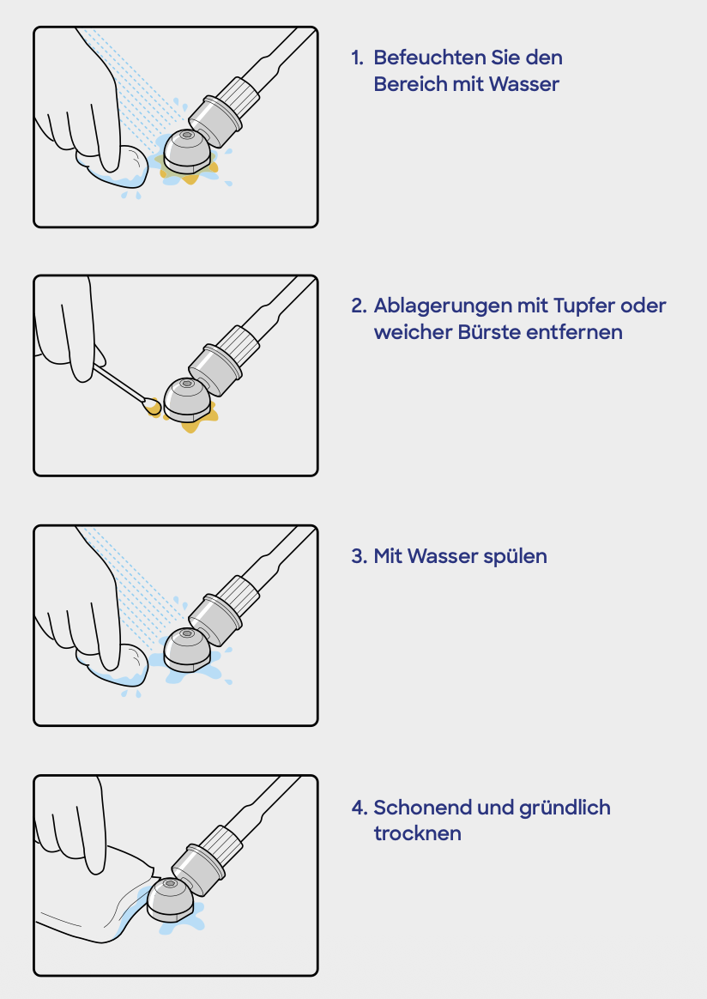

Klinische Studie · Universitätsklinikum Tübingen
INITIATE-LECIG untersucht die Wirksamkeit und Verträglichkeit einer intestinalen Levodopa-/Entacapon-Infusion (LECIG) mittels implantierbarer Pumpe bei Patienten mit fortgeschrittenem Morbus Parkinson, dopaminerger Sensitivierung sowie neuropsychiatrischen Komplikationen.
Informationen zur T-Port-Technologie und deren Rolle im Rahmen der intestinalen Pumpentherapie.
Mehr erfahren →
Informationen zur Studie, zum Ablauf und zur Teilnahme – verständlich erklärt für Patienten und Angehörige.
Mehr erfahren →
Fachliche Hintergrundinformationen, Studienprotokolle und klinische Ressourcen für medizinisches Fachpersonal.
Mehr erfahren →
Morbus Parkinson ist eine progrediente neurodegenerative Erkrankung, die primär durch den Verlust dopaminerger Neurone im Bereich der Substantia nigra charakterisiert ist. Im fortgeschrittenen Stadium entwickeln viele Patienten unter oraler Levodopa-Therapie motorische Fluktuationen, Dyskinesien sowie neuropsychiatrische Komplikationen – darunter Impulskontrollstörungen und dopaminerge Dysregulationssyndrome.
Die intestinale Infusion von Levodopa-Entacapone (LECIG) über eine implantierte Jejunalsonde ermöglicht eine kontinuierliche, pulsatilitätsarme dopaminerge Stimulation. Die INITIATE-LECIG-Studie untersucht, ob dieser Therapieansatz nicht nur motorische Fluktuationen reduziert, sondern auch neuropsychiatrische Komplikationen, die im Zusammenhang mit dopaminerger Sensitivierung stehen, günstig beeinflusst.
Die Studie wird an bis zu 20 erfahrenen Parkinson-Expertenzentren in Deutschland und Österreich durchgeführt, die sowohl klinische Expertise als auch eine gute geographische Abdeckung des Bundesgebietes gewährleisten. In zwei Stufen werden insgesamt 150 Patienten eingeschlossen (76 + 74). Patienten ohne bestehende Anbindung können einem wohnortnahen Zentrum zugewiesen werden. Die Mehrzahl der geplanten Zentren wird im Laufe des Jahres 2026 aktiviert.
Abb. 1: Geographische Verteilung der INITIATE-LECIG-Studienzentren in Deutschland und Österreich.
Bestätigte Zentren
Stand: Redaktionsschluss. Weitere Zentren werden im Laufe von 2026 aktiviert.
Studienregistrierung
| EU CT Nr. | 2025-521048-39-00 |
| ClinicalTrials.gov | NCT07151378 |
Finanzielle Unterstützung durch
STADAPHARM GmbH, Bad Vilbel
Studienleitung
Prof. Dr. med. Daniel Weiß
Studienleiter
Dr. med. Idil Cebi
Studienkoordinatorin
Zugangssystem · Substudie
Im Rahmen von INITIATE-LECIG wird der T-port® erstmals in Deutschland und Österreich als alternatives Zugangssystem zur konventionellen PEG-J-Sonde eingesetzt — bei einem Teil der Patienten im Rahmen einer begleitenden Substudie.
Der T-port® ist ein subkutan implantiertes enterales Zugangssystem der Firma Transcutan AB (Göteborg, Schweden). Er wird in das Fettgewebe unterhalb der Haut über dem Magen implantiert und ermöglicht über einen stabilen Ankermechanismus die Platzierung einer jejunalen Sonde — ohne offenen Hautkanal wie bei der konventionellen PEG.
Das System besteht aus drei Komponenten: der subkutan verankerten T-port® Base (Titan), dem aufschraubbaren T-port® Top (Edelstahl, Luer-Lock oder ENFit) und dem enteralen Polyurethan-Katheter, der über Magen und Jejunum in den Dünndarm führt.
Der Verlängerungsschlauch kann zwischen den Infusionen vollständig abgenommen werden — dann ist lediglich das unauffällige T-port® Top sichtbar.

Abb. 1: Querschnitt des T-port®-Systems mit Top, subkutaner Base und enteral Katheter.
Quelle: Transcutan AB

Abb. 2: Komponenten des T-port®-Systems (Top Luer-Lock, Base, Top ENFit, Enteral Catheter).
Quelle: Transcutan AB
Konventionelle PEG-J
T-port® Enteral Access System
∅ 3,6 J.
Voraussichtliche Lebensdauer
(Spanne: 1–5 Jahre)
1–2 h
Implantationsdauer
(Lokalanästhesie, wach)
✓
Katheterwechsel schmerzfrei
ohne Lokalanästhesie
Ablauf der Implantation
Nüchtern 6 h; Kontrastmittel 8–12 h vorher; Antibiotikaprophylaxe intraoperativ
Lokalanästhesie; Implantation unter Röntgenkontrolle (keine Gastroskopie)
Trinken ab ca. 6 h postop; Mahlzeit ab nächstem Morgen; LECIG-Infusion sobald Station freigegeben
Wundkontrolle nach 3 Wochen; Fadenentfernung; vollständige Einheilung nach ca. 3 Monaten
Heilungsverlauf nach Implantation
Abb.: Heilungsphasen nach T-port®-Implantation. Quelle: Transcutan AB
Regelmäßige Pflege ist entscheidend für die Lebensdauer des T-port® und zur Vermeidung von Stomainfektionen. Morgens und abends reinigen, stets gründlich trocknen. Den Katheter nach Gebrauch mit 20–40 ml Trinkwasser spülen.

Abb. 3: Empfohlene tägliche Reinigung des T-port® in vier Schritten.
Quelle: Transcutan AB
Reinigungsschema nach Transcutan AB-Patienteninformation (50-1023/DE, SP183-5/DE, Ausgestellt: 03.07.2025). Quelle: Transcutan AB.
⚠ Sofort Arzt/Pflegekraft kontaktieren
⚬ Engmaschige Beobachtung
MRT-Kompatibilität & Implantationsausweis
Da der T-port® Metall enthält (Titan-Base, Edelstahl-Top), müssen behandelnde Ärzte vor jeder MRT-Untersuchung über das Implantat informiert werden. Patienten erhalten einen Implantationsausweis (T-port® Implant Card, Transcutan AB), der stets mitgeführt werden sollte. Weitere Informationen: www.transcutan.com/T-port
Hersteller
Transcutan ABFür Patienten & Angehörige
Diese Seite richtet sich an Patienten mit Morbus Parkinson und ihre Angehörigen. Wir möchten Ihnen verständlich erklären, worum es in dieser Studie geht und was eine Teilnahme bedeutet.
Bei Morbus Parkinson werden Patienten in den ersten Jahren meist gut mit oralen Medikamenten behandelt. Mit fortschreitender Erkrankung kann die Wirkung jedoch nachlassen: Tabletten müssen immer häufiger und in höheren Dosen eingenommen werden, oft in Kombination mehrerer Wirkstoffe.
Trotzdem erleben viele Patienten wiederkehrende Off-Phasen (schlechte Beweglichkeit) und On-Phasen mit Überbewegungen. Beides beeinträchtigt den Alltag und die Lebensqualität erheblich.
Zusätzlich können orale Parkinsonmedikamente mit der Zeit neuropsychiatrische Komplikationen verursachen:
Die motorische Wirksamkeit der intestinalen Levodopa-Infusion (LECIG) ist gut belegt. Ob diese Therapie auch neuropsychiatrische Komplikationen verbessern oder sogar verhindern kann, wurde bisher nicht systematisch untersucht – genau das ist das Ziel von INITIATE-LECIG.
LECIG gibt Levodopa gleichmäßig und kontinuierlich ab – so wie Dopamin auch beim gesunden Menschen im Gehirn freigesetzt wird. Dies erlaubt eine Reduktion vieler Parkinsonmedikamente, die besonders häufig neuropsychiatrische Nebenwirkungen verursachen (z. B. Dopaminagonisten, Amantadin).
Was ist LECIG?
LECIG ist ein behördlich zugelassenes Medikament (seit 2022 in Deutschland und Österreich) und enthält die Wirkstoffe Levodopa, Entacapone und Carbidopa. Es wird über eine Sonde direkt in den Darm abgegeben und hat sich als sicher und wirksam bei motorischen Wirkungsschwankungen erwiesen. Die Anwendung in dieser Studie erfolgt innerhalb der zugelassenen Indikation („in-label").
✔ Wer kann teilnehmen?
✖ Wichtige Ausschlusskriterien
* Unvollständige Auswahl. Die vollständige Eignungsprüfung erfolgt nach schriftlichem Einverständnis im Rahmen des Studien-Screenings am Zentrum Ihrer Wahl.
Nach Prüfung der Einschlusskriterien und Ihrer Einwilligung beginnt die Studie mit einer Baseline-Untersuchung (Visite 1), gefolgt von einer Randomisierung: Sie werden per Zufallsprinzip entweder der LECIG-Gruppe oder der Gruppe mit optimierter oraler Therapie (BMT) zugeteilt – beide Gruppen werden wirksam behandelt.
Abb.: Schematischer Studienablauf INITIATE-LECIG. S = Screening, V1–V4 = Visiten, BMT = beste orale medikamentöse Therapie.
Nach der 6-monatigen randomisierten Phase schließt sich eine 12-monatige offene Nachbeobachtung an (bis Monat 18). Patienten der LECIG-Gruppe können ihre Therapie fortführen; Patienten der BMT-Gruppe erhalten nun ebenfalls die Möglichkeit, auf LECIG umzusteigen.
Neu: T-Port Zugangssystem
Seit März 2026 steht erstmals das T-Port-System als komfortablere Alternative zur konventionellen PEG-J-Sonde zur Verfügung. Skandinavische Erfahrungen zeigen einen höheren Alltagskomfort und weniger Hardware-Komplikationen. Mehr dazu finden Sie auf der T-Port-Seite.
Für Ärztliches Personal & Studienpersonal
Prospektive, randomisierte, kontrollierte, offene, zweiarmige Parallelgruppenstudie zur Wirksamkeit intestinaler Levodopa-Entacapone-Carbidopa-Infusion (LECIG) auf neuropsychiatrische Komplikationen bei Patienten mit fortgeschrittenem Morbus Parkinson.
150
Patienten (2 Stufen)
20
Expertenzentren
18
Monate Gesamtdauer
1:1
Randomisierung LECIG:BMT
Pulsatile dopaminerge Stimulation durch orale L-Dopa-Therapie induziert im Verlauf motorische Fluktuationen, Dyskinesien sowie neuropsychiatrische Komplikationen (NPS) — darunter Impulskontrollstörungen (ICD), dopaminerges Dysregulationssyndrom (DDS), Hypersexualität und affektive Off-Phasen-Symptomatik.
LECIG ermöglicht eine kontinuierliche, nicht-pulsatile jejunale Levodopa-Infusion und erlaubt die Deeskalation von Dopaminagonisten, Amantadin und Anticholinergika — den Haupttreibern neuropsychiatrischer Komplikationen. Die Studienhypothese: rechtzeitige Konversion auf LECIG reduziert NPS-Burden signifikant gegenüber optimierter oraler Therapie (BMT).
Stimulationsprofil im Vergleich
Primärer Endpunkt
Veränderung des Ardouin Behaviour Scale (ABS)-Gesamtscores (dopaminerge Hyperstimulations- und Hypostimulationsskala) gegenüber Baseline nach 6 Monaten (LECIG vs. BMT).
Wichtige sekundäre Endpunkte
Studienablauf & Visiten
Abb.: Studienablauf INITIATE-LECIG. SCR = Screening, V1–V4 = geplante Visiten, M = Monat, ABS = Ardouin Behaviour Scale, BMT = beste orale medikamentöse Therapie, LEDD = Levodopa-Äquivalenzdosis.
Einschlusskriterien
Ausschlusskriterien
Vollständige Kriterien im Prüfplan (Protokollversion gemäß Ethikvotum). Kontaktieren Sie die Studienkoordination für aktuelle Protokolldokumente.
Neuropsychiatrie
Motorik & Funktion
Kognition & Schlaf
★ Primärer Endpunkt. Alle Erhebungen gemäß Visitenplan (SCR, V1, V2, V3, V4).
Zugangssystem: PEG-J & T-Port
Die jejunale Applikation kann konventionell via PEG-J oder — seit März 2026 erstmals in Deutschland verfügbar — über das T-Port-System erfolgen. Skandinavische Real-World-Daten weisen auf höheren Alltagskomfort und reduzierte Hardware-Komplikationsraten hin. Beide Zugangswege sind im Studienprotokoll zugelassen. Weitere Informationen: T-Port-Seite.
Studienregistrierung
| EU CT Nr. | 2025-521048-39-00 |
| ClinicalTrials.gov | NCT07151378 |
| Sponsor | STADAPHARM GmbH, Bad Vilbel |
Studienleitung / Kontakt
Prof. Dr. med. Daniel Weiß (PI)
Dr. med. Idil Cebi (Koordination)
Neurologische Klinik · UKT
Hoppe-Seyler-Str. 3 · 72076 Tübingen
→ Kontaktformular
Kontakt
Nutzen Sie dieses Formular, um uns eine Nachricht zu senden. Wir melden uns bei Ihnen sobald wie möglich.